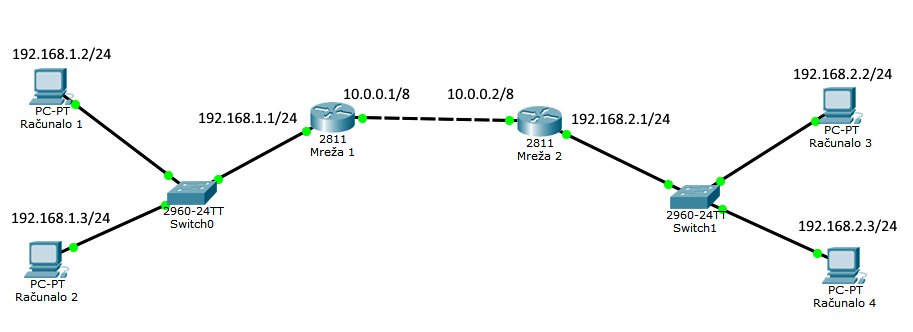

VPN - IPSEC
Autori: Nikola Šargač, Karlo Mlinarek
Sadržaj |
Uvod
Definicija VPN-a ima mnogo no sve su slične i ne razlikuju se mnogo. Virtual Private Network (VPN) je mrežna tehnologija koja omogućuje stvaranje sigurne veze na temelju neke manje sigurne veze, najčešće Interneta. Velike kompanije, vladin i vladine agencije, znanstvene ustanove te mnogi drugi koriste VPN tehnologiju kako bi omogućili korisnicima da se od bilo kuda mogu sigurno spojiti na privatnu mrežu te tako pristupiti svojim podacima, dijeliti podatke s drugim članovima privatne mreže i sl. Također koriste VPN kako bi sigurno povezali više mreža (poput ureda diljem svijeta). Ako se i ne radi o mrežama koje povezuju urede i sl. VPN također možemo iskoristiti kako bi sigurno povezali neke svoje lokalne mreže za privatne potrebe. VPN se može usporediti sa privatnom mrežom, no privatna mreža na velike udaljenosti je preskupa te također za ljude i kompanije koji su stalno u pokretu je neizvediva. Stoga je VPN popularniji i jeftiniji. [1]
Još jedan slučaj u kojem možemo koristiti VPN je ako želimo biti sigurni kod korištenja javnih i nepovjerljivih mreža poput Wi-Fi hotspota u kafićima i sl. Jednostavno se spojimo na enkriptirani VPN koji zatim enkriptira sav naš promet te ako postoje neki zlonamjerni korisnici koji žele "snoopati" naš promet na toj mreži kako bi saznali naše lozinke i ostale privatne stvari, pomoću VPN-a im to onemogućimo. Također VPN se može koristiti kod takozvanog geoblockinga, tj. kada korisnik iz npr. Hrvatske ne može pristupiti nekom sadržaju kojem mogu pristupiti stanovnici SAD-a. Tada se korisnik može spojiti na VPN koji se nalazi u SAD-u te pomoću njega pristupiti tom sadržaju. [2]
Kako radi VPN?
Postoje dvije tehnologije koje olakšavaju kreiranje VPN-a kako bi sigurno i pouzdano prenosili podatke preko mreže. To su enkriptiranje i tuneliranje. Svi znamo što je enkriptiranje te stoga nećemo posebno to objašnjavati. Tuneliranje je proces stvaranja virtualnog tunela u koji se smješta dio sadržaja nekog paketa ili cijeli paket u drugi paket koji se zatim prenosi preko javne mreže. Protokol enkapsuliranja tog paketa je takav da ga niti jedno drugo računalo, tj. mrežni uređaj koji se nalazi u javnoj mreži ne može dekapsulirati. Rezultat spajanja ovih dviju tehnologija je siguran i pouzdan prijenos podataka između dvije točke koje su dio VPN-a. Na slici ispod prikazan je jedan takav "tunel" koji spaja klijenta na jednoj strani preko Interneta sa nekom lokalnom mrežom na drugoj strani. [3]
{kind=link}
VPN protokoli
Postoji nekoliko protokola koji se koriste kako bi se zaštitili podaci koji se prenose VPN-om preko javnih mreža. Svaki protokol ima neke razlike u tome kako štite podatke. Pošto ćemo o IP security (IPSec) protokolu govoriti detaljnije nešto kasnije njega nećemo posebno spominjati. Neki od ostalih security protokola su:
Point-to-Point Tunneling Protocol (PPTP) jedan je od najrasprostranjenijih protokola ali je i najmanje siguran protokol za korištenje u VPN-u. Jednostavan je za konfiguraciju i dobar za početnike jer je ugrađen u dosta operacijskih sustava poput Windowsa, MacOs-a.
Secure Sockets Layer (SSL) i Transport Layer Security (TLS) koriste kriptografiju kako bi osigurali podatke. Oba protokola koriste „handshake“ metodu autentikacije koja uključuje dogovaranje parametara između dvije strane. Kako bi veza bila uspješno uspostavljena koriste se certifikati koji su ubiti kriptografski ključevi, a posjeduju ih obje strane veze. Ovi protokoli veoma su popularni jer se veza uspostavlja pomoću web browsera te su stoga puno lakši i pouzadniji za upotrebu od ostalih protokola stoga što ne zahtijevaju instalaciju dodatnih klijenata za njihovu konfiguraciju.
OpenVPN je open-source VPN sustav baziran na SSL kodu. Besplatan je i siguran te nema problema s povezivanjem, no korištenje OpenVPN-a zahtjeva instalaciju dodatnog klijenta je po prirodi nije ugrađen u operacijske sustave poput Windowsa, Mac OSa...
Layer 2 Tunneling Protocol (L2TP) je protokol koji se koristi za tuneliranje podataka između dvije strane preko Interneta. O tunnelingu smo rekli već nešto i prije. L2TP se koristi skupa s IPSecom, pri čemu je IPsec zadužen za sigurnost (služi kao sigurnosni sloj). [2]
Autor: Karlo Mlinarek
IPsec (IP security)
IPsec (IP security) je skup protokola IETF standarda koji osigurava autentikaciju, integritet i tajnost podataka između dvije međusobno povezanih strana. • Autentikacija – potvrđuje ispravan identitet pošiljatelja • Integritet – osigurava da se podaci tijekom prijenosa nisu promijenili • Tajnost – skriva sadržaj prijenosa pomoću enkripcije. Prema OSI modelu IPsec djeluje na mrežnom sloju.
Tri glavne komponente IPsec-a su:
Enkapsulacija sigurnosnih podataka (ESP) - štiti od vanjskog petljanja s podacima i pruža zaštitu sadržaja poruke, vrši autentikaciju podataka na način da svakom IP paketu dodaje ESP zaglavlje korištenjem standardnih algoritama (MD5, SHA), enkriptira podatke unutar IP paketa kako je prikazano na slici:
{kind=link}
Autentikacijsko zaglavlje - osigurava autentikaciju i integritet podataka pomoću istih algoritama kao i ESP, autenticiran je cijeli IP paket
{kind=link}
Security Association - stvara jednosmjernu vezu između dva uređaja, IPsec tipično koristi dvije SA veze kako bi stvorio full-duplex kanal
SA koristi dvije metode povezivanja: Transport mode u kojemu je enkapsuliran samo sadržaj paketa (payload), IP zaglavlje ostaje nezaštićeno, stvara se sigurna veza između dva računala (host-to-host) te Tunnel mode kod kojega se enkapsulira cijeli IP paket, dodaje se novo IP zaglavlje, komunikacija se odvija između dva gateway-a te napadač ne može saznati adresu ni odredište [4].
{kind=link}
Autor: Nikola Šargač
Host-to-host (transport mode) primjer
Kao što smo već rekli transport mode je sigurna veza između dva računala u istoj mreži. Kako bi pokazali kako konfigurirati IPsec vezu između dva hosta, tj. dva računala koristili smo Kali verziju Linux operacijskog sustava koji je baziran na Debian-u te ga pokrenuli na dva virtualna hosta kojima smo kod njihovih postavljanja stavili da kod spajanja na Internet koriste Bridged adapter.
Prvi host kod postavljanja nazvali smo „Kali 1“ te je on poprimio sljedeću IP adresu: 192.168.1.51
Drugi host nazvali smo „Kali 2“, a njegova IP adresa je: 192.168.1.52
Za početak morali smo instalirati IPsec alat „strongSwan“. On nam omogućuje stvaranje IPsec veze između naša dva virtualna hosta. Kako bi instalirali taj alat, ali i sve ostale radnje radimo u terminalu, a koristili smo naredbu:
apt-get install ipsec-tools strongswan-starter
Dodajmo još da će sve naredbe biti opisane naknadno, nakon što pokažemo konfiguraciju svakog hosta.
Nakon što smo na oba hosta instalirali „strongSwan“ konfiguriramo vezu. Prvo ćemo konfigurirati prvi host Kali 1. Host konfiguriramo tako da u terminal upišemo:
nano/etc/ipsec.conf
nakon čega nam se otvara datoteta sa IPsec postavkama u koju zatim upisujemo sljedeće:
conn kali1-to-kali2 authby=secret auto=route keyexchange=ike left=192.168.1.51 right=192.168.1.52 type=transport esp=aes128gcm16!
Zatvaramo datoteku i spremamo njezine promjene.
Nakon što smo konfigurirali prvi host još moramo napraviti par koraka kako bi završili sav potreban rad što se njega tiče. Za autentikaciju između naša dva hosta koristiti ćemo metodu „Pre shared key“ što znači da će naši hostovi prije početka komunikacije razmjeniti taj ključ, tj. utvrditi da li imaju zadan isti ključ („Pre shared key“). Kako bi postavili taj ključ moramo kreirati novu datoteku koja će sadržavati taj ključ.
nano /etc/ipsec.secrets
U datoteku upišemo IP detalje naše konekcije, a to su IP adrese hostova te metodu autentikacije:
192.168.1.51 192.168.1.52 : PSK „SIS projekt“
spremimo i zatvorimo datoteku. Nakon toga restartamo IPsec te je konfiguracija prvog hosta završena.
ipsec restart
Nakon završene konfiguracije prvog hosta, konfiguriramo drugi host tako da, kao i kod prvog, otvorimo datoteku sa IPsec te upišemo sljedeće postavke:
conn kali2-to-kali1 authby=secret auto=route keyexchange=ike left=192.168.1.52 right=192.168.1.51 type=transport esp=aes128gcm16!
Kao i kod prvog hosta i kod ovog moramo stvoriti datoteku koja će opisivati način autentikacije, tj. koja će sadržavati PSA.
nano /etc/ipsec.secrets
Kada nam se otvori datoteka sa IP detaljima, u nju upisujemo iste podatke kao i kod prvog hosta (moramo paziti da podaci budu jednaki):
192.168.1.51 192.168.1.52 : PSK „SIS projekt“
Također spremimo i zatvorimo datoteku te restartamo IPsec:
ipsec restart
Kako bi provjerili da li je veza uspostavljena možemo pomoću ping naredbe isprobati da li paketi dolaze od jednog hosta do drugog:
Sa Kali 1: ping 192.168.1.52 Sa Kali 2: ping 192.168.1.51
Na slikama ispod možemo vidjeti uspješne pingove sa Kali1 hosta na Kali2 host i obrnuto (lijeva slika Kali1, desna Kali2).
{kind=link}
{kind=link}
Također, status IPsec veze možemo provjeriti tako da u terminal upišemo naredbu:
watch ipsec statusall
te ako IPsec radi dobijemo popis veza sa jednog hosta na drugi kao što je prikazano na slikama ispod.
{kind=link}
{kind=link}
Sada ćemo pokušati objasniti neke od naredba koje koristimo u IPsec postavkama.
authby=secret
IPsec podržava nekoliko različitih vrsta autentikacije. Zbog toga što mi koristino PSA ključ mi odabiremo vrstu autentikacije „secret“.
auto=route
Pomoću ove naredbe biramo kako će početi uspostava veze. Biramo između 3 opcije add, start ili route. U našem slučaju izabrali smo route što znači da će se veza sama uspostaviti na temelju postavljenih adresas u left i right redku.
keyexchange=ike
Sa postavkom keyexchange biramo protokol sa kojim će se razmjeniti ključevi te kako bi veza mogla biti uspostavljena. U našem slučaju uzeli smo IKE (Internet Key Exchange)
left=192.168.1.52 right=192.168.1.51
U atribute left i right stavljamo IP adrese naših hostova. Ovdje moramo obratiti pozornost na host koji konfiguriramo. Ako konfiguriramo Kali 1 onda u atribut left ide IP adresa od host Kali 1, a u right IP adresa hosta Kali 2. Također ista stvar vrijedi i za host Kali 2.
type=transport
Ovom naredbom odabiremo kakav tip veze ćemo stvoriti. Pošto mi konfiguriramo transporte mode naravno da ćemo uzeti tip transport. Kada bi smo željeli stvoriti vezu tipa IPsec tunel izabrali bi type=tunnel.
esp=aes128gcm16!
Kao što smo već prije u teoriji spomenuli ESP štiti od vanjskog petljanja s podacima i pruža zaštitu sadržaja poruke, vrši autentikaciju podataka na način da svakom IP paketu dodaje ESP zaglavlje korištenjem različitih algoritama. Mi smo odabrali AES128 algoritam za zaštitu sadržaja poruke uz još dodatak da poruka mora biti veličine 16 okteta.
Autor: Karlo Mlinarek
Site-to-site (tunnel mode) primjer
U ovom poglavlju biti će prikazana simulacija virtualne privatne izrađena mreže u alatu Cisco Packet Tracer. Biti će objašnjeno kako postaviti i konfigurirati dva Cisco 2811 rutera koristeći IPsec protokol. Zadati ćemo da oba rutera imaju statičku javnu IP adresu te svaki od njih ima po jednu podmrežu. Konfiguracija rutera izvoditi će se u dva koraka. Prvi je postavljanje ISAKMP-a a drugi je postavljanje IPsec-a.
ISAKMP (Internet Security Association and Key Management Protocol) je protokol koji vodi „pregovore“ između dvije mreže i uspostavlja SA (Security Associations) te u konjunkciji s IKE (Internet Key Exchange) dodjeljuje kriptografske ključeve.
Naravno, prije samog postavljanja IPsec-a, prvo moramo konfigurirati mrežu. U to je uključena izrada topologije mreže te dodjeljivanje IP adresa računalima i portovima na routerima. Na slici ispod prikazana je topologija mreže zajedno s IP adresama čvorova. 
{kind=link}
IP adrese routerima i računalima mogu se dodijeliti korištenjem grafičkog sučelja ili command prompta. Na slici je prikazano korištenje grafičkog sučelja.
{kind=link}
Nakon postavljanja ip adresa postavlja se statičko usmjeravanje koje smo odabrali za ovaj primjer. To se vrši upisivanjem naredbe u Command prompt na svakom ruteru. Ispod je prikazana sintaksa te naredbe za ruter "Mreža 1".
mreza1(config-if)#ip route 192.168.2.0 255.255.255.0 10.0.0.2
Sada kreće prva faza postavljanja IPsec-a a to je konfiguriranje ISAKMP-a. To se vrši sljedećim naredbama:
mreza1(config-if)#crypto isakmp policy 1 mreza1(config-isakmp)#encr 3des mreza1(config-isakmp)#hash md5 mreza1(config-isakmp)#authentication pre-share mreza1(config-isakmp)#group 2 mreza1(config-isakmp)#lifetime 86400
crypto isakmp policy definira IKE politiku. 3DES je algoritam korišten u ovoj fazi. MD5 je hash algoritam. Pre Share označava korištenje unaprijed dodijeljenih ključeva. group 2 je Diffie Hellman grupa koja će se koristiti (algoritam za eksponencijalnu razmjenu ključeva). Lifetime trajanje ključa sesije, u kilobajtima ili sekundama [6].
Zatim se definiraju "Pre shared" ključevi s ruterom "Mreža 2" preko adrese interface-a na kojoj je "Mreža 2" vidljiv pomoću sljedeće naredbe:
mreza1(config)#crypto isakmp key firewallcx address 10.0.0.2
Nakon toga kreira se access control lista pomoću koje definiramo za koje mreže će promet biti dopušten.
mreza1(config)#ip access-list extended VPN-TRAFFIC mreza1(config-ext-nacl)#permit ip 192.168.1.0 0.0.0.255 192.168.2.0 0.0.0.255
Zatim se transform set kojim se štite podaci, nazvali smo ga TS te u ovom slučaju koristimo 3DES za ESP i MD5-HMAC
mreza1(config-ext-nacl)#crypto ipsec transform-set TS esp-3des esp-md5-hmac
Sljedeći korak je definiranje kriptomape koja povezuje prijašnje ISAKMP I IPsec konfiguracije:
mreza1(config)#crypto map CMAP 10 ipsec-isakmp mreza1(config-crypto-map)#set peer 10.0.0.2 mreza1(config-crypto-map)#set transform-set TS mreza1(config-crypto-map)#match address VPN-TRAFFIC
Posljednji korak je dodjela kriptomape interface-u (sučelju) routera (usmjernika):
mreza1(config)# interface FastEthernet0/1 mreza1(config- if)# crypto map CMAP
{kind=link}
Verifikacija - kako bi se uvjerili da je VPN zaista aktiviran potrebno je ping naredbom poslati jedan paket kroz mrežu. Na primjer, "pingamo" dva rutera te vidimo kako ping uspješno prolazi:
mreza1#ping 10.0.0.2
Type escape sequence to abort. Sending 5, 100-byte ICMP Echos to 10.0.0.2, timeout is 2 seconds: .!!!! Success rate is 80 percent (4/5), round-trip min/avg/max = 0/0/2 ms
Kako bi provjerili postoji li VPN tunel koristimo sljedeću naredbu:
R1# show crypto session
Crypto session current status
Interface: FastEthernet0/1
Session status: UP-ACTIVE
Peer: 10.0.0.2 port 500
IKE SA: local 10.0.0.1/500 remote 10.0.0.2/500 Active
IPSEC FLOW: permit ip 192.168.1.0/255.255.255.0 192.168.2.0/255.255.255.0
Active SAs: 2, origin: crypto map
Autor: Nikola Šargač
Literatura
[1] http://whatismyipaddress.com/vpn Dostupno: 7.1.2017.
[2] http://www.pcworld.com/article/2030763/networking/how-and-why-to-set-up-a-vpn-today.html Dostupno 7.1.2017.
[3] http://www.makeuseof.com/tag/virtual-private-network-work-technology-explained/ Dostupno 7.1.2017.
[4] http://documentation.netgear.com/reference/enu/vpn/VPNBasics-3-02.html Dostupno 6.1.2017.
[5] https://habemegygol.wordpress.com/2012/11/26/ccna-security-chapter-8-site-to-site-ipsec-vpn-packet-tracer-activity-answer/ Dostupno 7.1.2017.
[6] http://www.firewall.cx/cisco-technical-knowledgebase/cisco-routers/867-cisco-router-site-to-site-ipsec-vpn.html Dostupno 8.1.2018.
[7] https://www.gypthecat.com/ipsec-vpn-host-to-host-on-ubuntu-14-04-with-strongswan Dostupno 8.1.2018.
[8] http://blog.jameskyle.org/2012/07/configuring-openswan-ipsec-server/ Dostupno 8.1.2018.